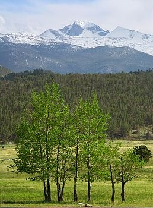

Operation Spring was an offensive operation conducted by II Canadian Corps during the Normandy campaign. The plan was intended to create pressure on the German forces operating on the British and Canadian front simultaneously to American offensive operations in their sector known as Operation Cobra, an attempt to break out from the Normandy lodgement. Specifically, Operation Spring was intended to capture Verrières Ridge and the towns on the south slope of the ridge. However, strong German defenses on the ridge, as well as strict adherence to a defensive doctrine of counter-attacks, stalled the offensive on the first day, inflicting heavy casualties on the attacking forces, while preventing a breakout in the Anglo-Canadian sector.
